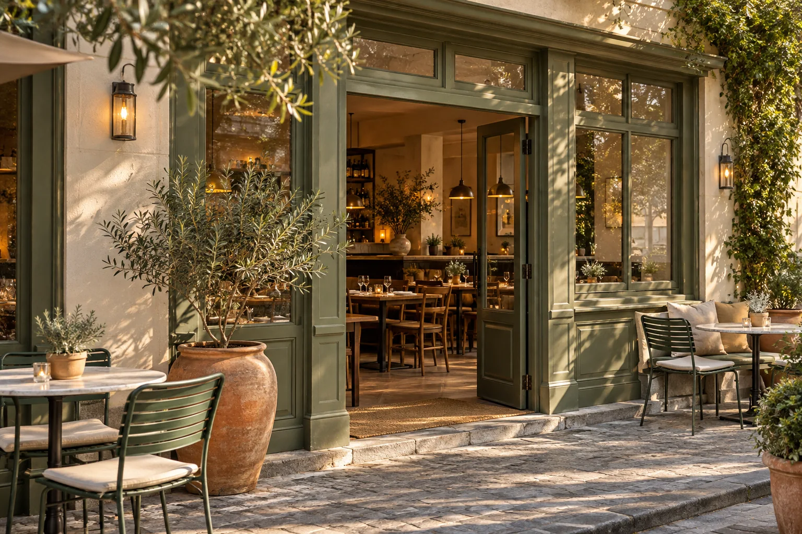
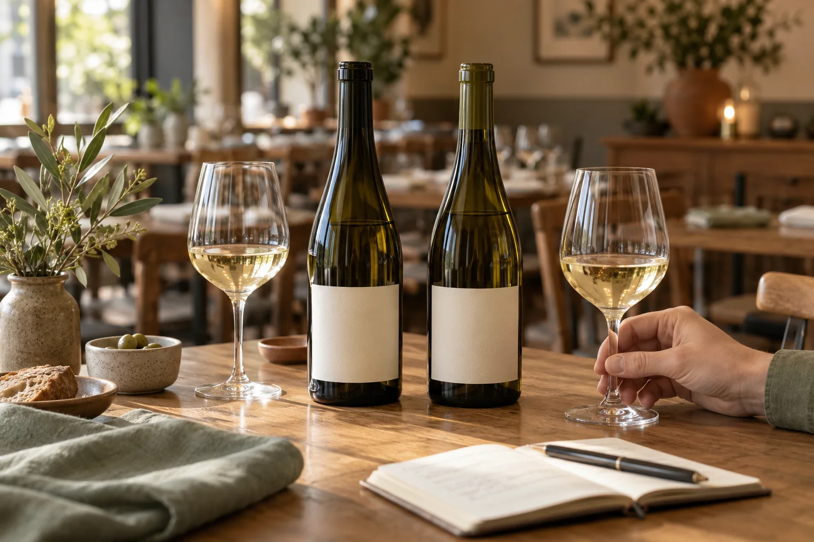

Brief the team.
See who’s caught up.
Publish tonight’s specials, 86’d items, and VIP notes in one pre-shift briefing. Versioned read receipts show who is ready before the first table sits.
Your people bring the hospitality. Brigly brings the schedule, pre-shift briefing, station checklists, and house knowledge into one calm workplace—so everyone starts ready and managers know what is done.
Designed for independent restaurants, bars & hospitality teams.
Calm operations for modern hospitality.


New Cabernet by the glass, Ribeye special notes, and 7:00 PM private table prep—in one place.
The kitchen has a new seasonal special. The bar is running low on limes. Someone missed the 3:45 PM huddle. Give those details one dependable home your whole team can check—without every question coming back to you.
Publish tonight’s specials, 86’d items, and VIP notes in one pre-shift briefing. Versioned read receipts show who is ready before the first table sits.
From bar prep to kitchen pass checks, staff complete tasks, log cooler temperatures, and submit for review. Managers approve in one tap or return with notes.
Keep verified recipes, wine pairings, and allergen rules searchable on any phone—and capture closing handovers and supply requests for tomorrow’s lead.
Toggle between Team Member (Alex) and Manager (Jamie) below to see how staff actions and manager approvals connect—or open the full 9-module workspace.
Follow a single Friday evening at The Copper Room—from 3:30 PM pre-shift prep to the 11:15 PM handover.
Jamie publishes tonight’s briefing: a new Paso Robles Cabernet, 18 portions of the Ribeye special, and an 8-top at 7:00 PM. Staff acknowledge on their phones before stepping onto the floor.
Open shift briefing ↗Alex and Sam complete the Bar Opening checklist, log the cooler temperature (3.7°C), and flag low limes. Jamie reviews and approves both from the Manager Inbox.
Open station checklists ↗Before locking up, the team logs a closing handover note and consolidates approved bar and kitchen supply requests into one vendor order list for Saturday morning.
Open supply & handover ↗A calm service starts days before the doors open. Give your team a clear view of when they are working, who is on the floor with them, and what responsibilities come with that shift.
Bring Front of House, Bar, and Kitchen schedules into one clean view instead of scattered spreadsheets and group-chat screenshots.
When plans change, staff request cover from an eligible colleague. Managers approve in one click before the live roster updates.
Selecting any day opens that shift’s team list, assigned stations, pre-service briefing, and opening checklist.
Alex Morgan ↔ Chris Taylor · Ready for manager approval in demo

A server stepping onto the floor at 4:00 PM needs a different view than the General Manager running Friday night service.
Open your phone to see tonight’s schedule, acknowledge the briefing, check off station tasks, look up wine or allergen notes, and request a shift swap or restock.
Open Team View in the demo ↗

Your guests will never see your operations software—and they shouldn’t have to. They’ll notice the calm welcome at the door, the server who knows the new Cabernet inside out, and a dining room moving in effortless rhythm.
Brigly begins with your internal team workplace. Over time, our ambition is to connect the guest-facing touchpoints around that team—menus, reservations, point of sale, and your website.
Maintain dish specs, wine lists, and allergen notes in one approved source—powering both pre-shift staff training and guest menus.
Connect table bookings, pacing, and guest dietary notes directly to tonight’s pre-shift briefing so the host stand, floor, and kitchen prepare together.
Seasonal cooking. Warm hospitality.
Bring tableside ordering, kitchen routing, and payments onto the same foundation—eliminating duplicate menu entry during service.
Publish a welcoming restaurant website that stays automatically in sync with your approved seasonal menus, hours, and reservations.

Dinner Tuesday–Sunday · Menu & Reservations
LIVE MENU / OUR STORYMenus, Reservations, POS, and Studio are long-term product concepts, not active services. Explore Brigly Core today to test our team workplace starting point.
Explore the Core workspace ↗
Recommends the Mosel Riesling from your verified beverage list—pairing its crisp acidity with the browned butter in the risotto, with direct links to both approved records.
Help servers and bartenders study tasting notes, preparation methods, and pairings using only your approved house specs.
Turn new menu additions, low-stock alerts, and handover notes into a clean briefing draft for manager review.
AI never guesses on food safety. Every dietary question cites verified records and requires confirmation from kitchen or floor leadership.
What you can test in the interactive workspace today, and how the preview works.
You can switch between Alex Morgan (Team Member) and Jamie Chen (General Manager) at any time. When Alex acknowledges a briefing, submits the Bar Opening checklist, requests a Friday shift swap, or flags low bar stock, Jamie immediately sees those items in Service Command and the Review Inbox to approve or return with feedback.
Yes. On mobile, the workspace adapts with a role-specific bottom navigation bar, quick role toggle, and touch-friendly checklists, briefings, and schedules right in your browser.
Yes. All sample actions are stored locally in your browser’s localStorage and can be reset to the original state at any time with one click.
Not yet. Brigly is an early product concept and registration is currently closed while we build the core platform.

Free browser preview · Instant role switching · No login required.